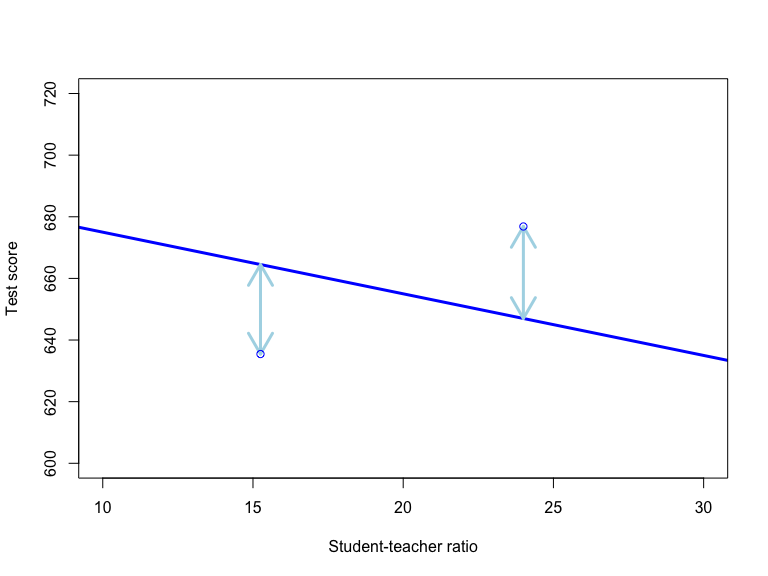
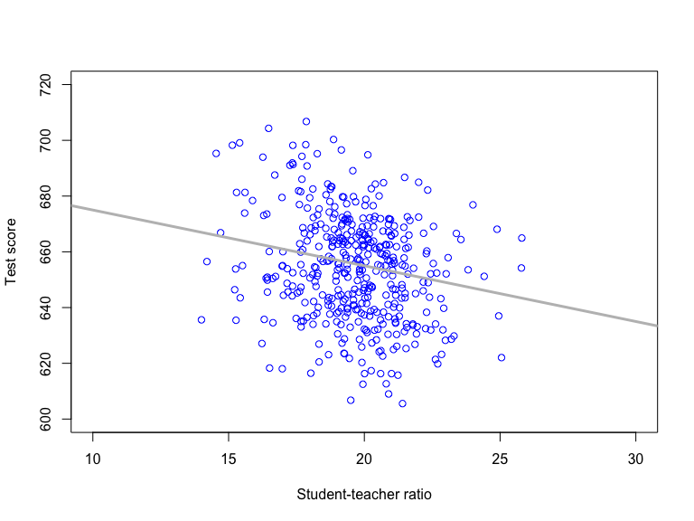
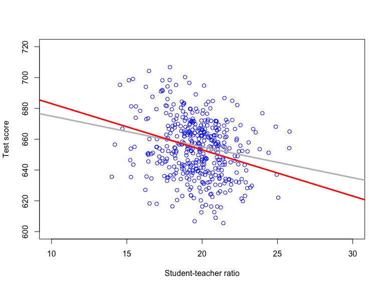
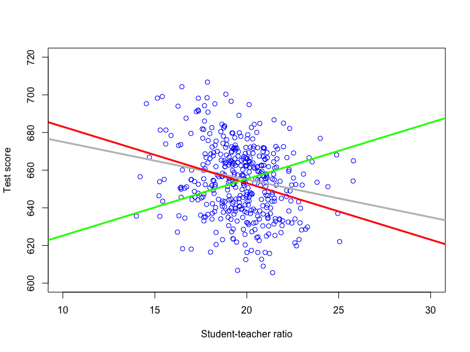
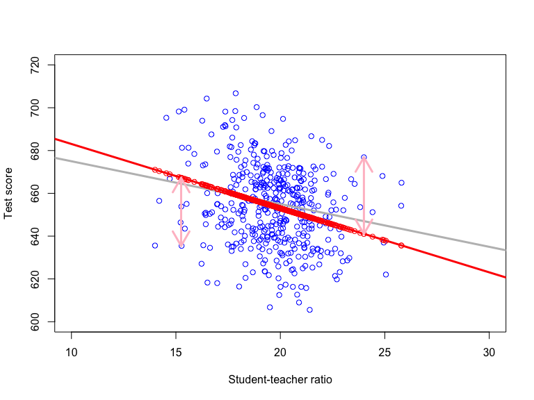

Based on Stock and Watson, ch. 4
Suppose the relationship between \(Score\) and \(STR\) that holds, on average, in the population is a linear function
\[\mathrm{E}(Score|STR) = \beta_0 + \beta_1 STR\]
\(\mathrm{E}(Score|STR)\) is the population regression function, where \(\beta_0\) is the intercept and \(\beta_1\) is the slope
We can, under certain conditions to be spelled out, use the regression function to:
Predict \(Score\) from \(STR\)
Evaluate the effect of changes to \(STR\) on \(Score\)
\[Score = \underset{\mathrm{E}(Score|STR)}{\underbrace{\beta_0 + \beta_1 STR}} + u\]
The error term \(u\) is the error made when predicting \(Score\) from \(STR\) using \(\mathrm{E}(Score|STR)\)
\(Score\) is called the dependent variable, \(STR\) is called the regressor/independent variable

# Define population regression function (of x) as f(x) = 695 - 2*x
popregfct <- function(x){695-2*x}
# Plot a curve of popregfct
curve(popregfct,
from = 5, to = 35, # Evaluate in x values from 5 to 35
xlab = "Student-teacher ratio", # Label on x-axis
ylab = "Test score", # Label on y-axis
xlim = c(10, 30), # Range of x-axis (from 10 to 30)
ylim = c(600, 720), # Range of y-axis (from 600 to 720)
lwd = 3, # Set linewidth to 3
col = "blue") # Make the plotted line blueProblem: \(\beta_0\) and \(\beta_1\) are unknown
Estimation: learn about \(\beta_0\) and \(\beta_1\) from random sample of data from the population; data is
\[(Score_i,STR_i; i=1,2,...,n)\]
Each data point \(i\) follows the population regression
\[Score_i = \beta_0 + \beta_1 STR_i + u_i\]
library(AER) # include Applied Econometrics with R package; contains many datasets
data(CASchools) # Load CASchools data
# Generate a couple of useful variables
CASchools$STR <- CASchools$students/CASchools$teachers # Student-teacher ratio
CASchools$Score <- (CASchools$read + CASchools$math)/2 # Student test score
# Scatter plot of Score against STR
plot(CASchools$STR,CASchools$Score,
col = "blue", # Color of data points
xlab = "Student-teacher ratio", # Label on x-axis
ylab = "Test score", # Label on y-axis
xlim = c(10, 30), # Range of x-axis (from 10 to 30)
ylim = c(600, 720)) # Range of y-axis (from 600 to 720)
# Add line with intercept 695 and slope -2 to the plot
abline(695,-2,
col = "gray", # Make the line gray
lwd = 3) # Set linewidth to 3Sample regression function \(= 713 - 3 STR\) 
Sample regression function \(= 595 + 3 STR\) 
Let \(\widehat{\beta}_0\) and \(\widehat{\beta}_1\) be your guesses (estimates) of the values of \(\beta_0\) and \(\beta_1\). For example, \(\widehat{\beta}_0 = 713\) and \(\widehat{\beta}_1 = -3\)
Given \(\widehat{\beta}_0\) and \(\widehat{\beta}_1\), the fitted value \(\widehat{Score}_i\) is:
\[\widehat{Score}_i = \hat{\beta}_0 + \hat{\beta}_1 STR_i\]
The residual \(\widehat{u}_i\) is:
\[\widehat{u}_i = Score_i - \widehat{Score}_i\]
There is a fitted value and a residual for each observation \(i = 1,2,...,n\) in the sample
\[\widehat{Score}_i = 713 - 3 STR_i\] \[\widehat{u}_i = Score_i - (713 - 3 STR_i)\] 
The OLS estimator finds regression coefficients that puts the fitted regression line as close to the data as possible
The distance between the regression line and the data is measured by the sum of squared residuals
Formally, the OLS estimators \(\widehat{\beta}_0\) and \(\widehat{\beta}_1\) solve
\[\min_{\hat{\beta}_0,\hat{\beta}_1} \sum_{i=1}^n \widehat{u}_i^2\]
where \(\widehat{u}_i = Score_i -\widehat{\beta}_0 - \widehat{\beta}_1 STR_i\).
The OLS estimator of \(\beta_1\):
\[\hat{\beta}_1 = \frac{\sum_{i=1}^n (STR_i-\overline{STR})(Score_i-\overline{Score})}{\sum_{i=1}^n (STR_i-\overline{STR})^2}\]
The OLS estimator of \(\beta_0\):
\[\hat{\beta}_0 = \overline{Score} - \hat{\beta}_1 \overline{STR}\]
An estimator is a rule that tells you how to compute estimates from a sample. An estimator is a random variable
An estimate is obtained by applying the estimator to a specific sample. An estimate is a fixed number.
# Estimate b0,b1 in Score = b0 + b1 STR + u by OLS;
# then assign output to lm1
lm1 <- lm(Score ~ STR, data = CASchools)
lm1 # Print output to console##
## Call:
## lm(formula = Score ~ STR, data = CASchools)
##
## Coefficients:
## (Intercept) STR
## 698.93 -2.28OLS sample regression function \(=698.93 -2.28 STR\)
# Scatter plot of Score against STR
plot(CASchools$STR,CASchools$Score,
col = "blue", # Color of data points
xlab = "Student-teacher ratio", # Label on x-axis
ylab = "Test score", # Label on y-axis
xlim = c(10, 30), # Range of x-axis (from 10 to 30)
ylim = c(600, 720)) # Range of y-axis (from 600 to 720)
# Add line with intercept 695 and slope -2 to the plot
abline(695,-2,
col = "gray", # Make the line gray
lwd = 3) # Set linewidth to 3
# Add sample regression function to the plot
abline(lm1,
col = "red", # Make the line red
lwd = 3) # Set linewidth to 3\[Score_i = \beta_0 + \beta_1 STR_i + u_i\]